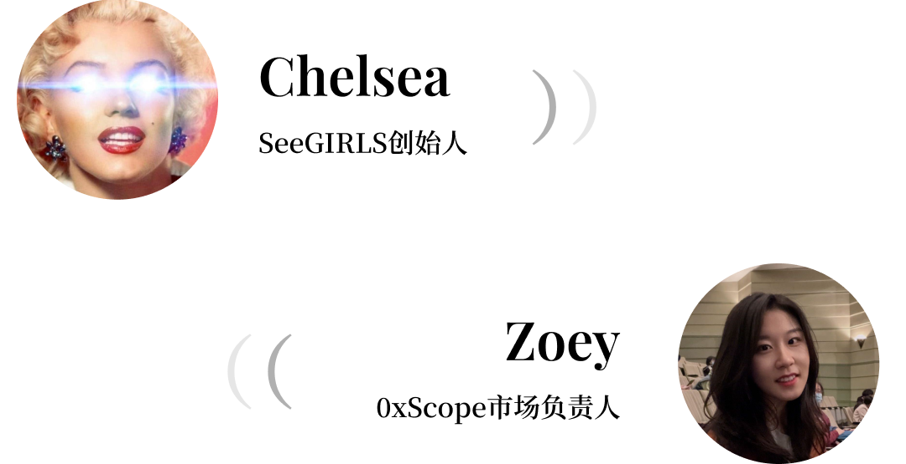
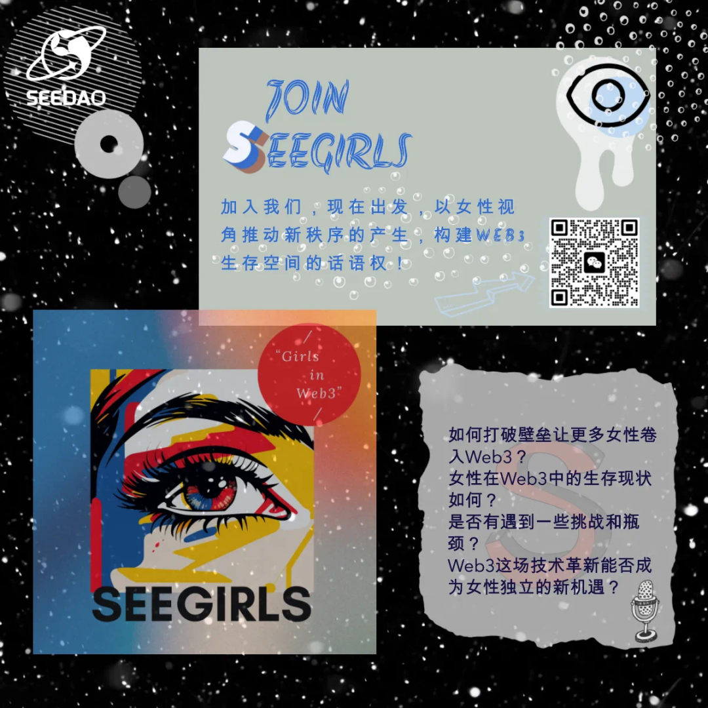
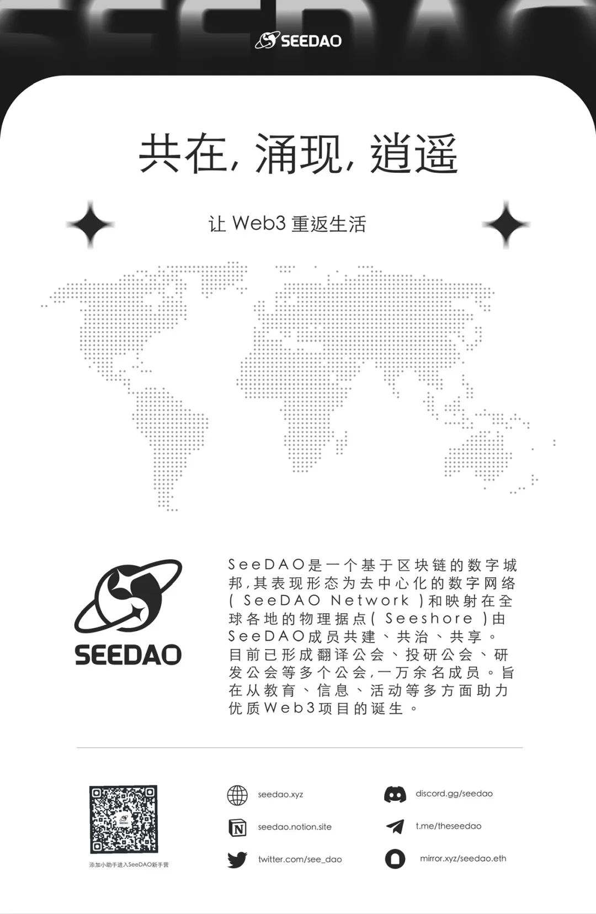

◇◇◇◇◇◇◇
Chelsea
欢迎来到SeeGIRLS Web3她声音第八期，我是今天的主持人Chelsea。今天我们的分享会邀请到了0xScope的市场负责人Zoey。Zoey作为一个连续创业的女性，在离开大厂决心选择创业前做了很多人生选择和活法上的思考，今晚我们来慢慢聊这个话题。接下来先请Zoey简单介绍一下自己。
Zoey
大家好，我叫Zoey，目前在0xScope主要负责BD和对外合作，也希望我的分享和闲聊能带给大家一些力量。
Chelsea
Zoey是如何进入Web3领域并和0xScope结缘的?
Zoey
这个要从很久之前讲起。大学毕业后我在互联网大厂Fintech、金融相关行业工作，当时在国内互联网金融是一个发展很快的细分赛道，伴随公司的快速成长我获得了一些收获。但会发现大厂里这种工作，虽然平台很好，有很多优秀的同龄人，但做到一定程度之后，即便你再努力再优秀，它的团队元老和架构已经比较固定了，你很难再有一些新的机会和事情去获得成长，包括当时国内Fintech也经历了一个比较大的监管，就思考了许多。在大厂中如果一直做下去，也是一个很好的选择，但从另一个角度讲，如果你希望有更多的选择权，或者有更多的时间去做一些喜欢的事情，这在大厂是很困难的一件事，所以那时候我就坚定的选择了出来创业，去找到一些更快的发展，收获想要的某种程度上的自由。
之后就是和几个好伙伴一起创业去做跨境电商方向的营销，但其实算到了一个新的行业，也触碰到了一些天花板。后来就在看不同的赛道，跟Web3的结缘也是从那个时候开始的。
那时候看到Web3的数据赛道跟我的经历比较匹配，我也在推特和各种社区里面认识很多的人，结识了0xScope的创始团队。那时候他们刚刚搭建好database和 To C 的产品，即将做 To B 的尝试，我跟大家聊的比较契合，也正好在这个板块积累过很多经验，大家就一拍即合，我就加入了这个团队。目前在团队中主要负责To B 商业化及业务结构的搭建，和各种对外合作的部分。
Chelsea
能感受到Zoey这些年一直在路上，我一直非常欣赏敢于去折腾的女性。所以经历过几段创业，你觉得你的女性领导力在其中发挥了什么样的作用？
Zoey
很好的问题。我是湖南人，湖南女生的性格比较蛮霸，我觉得我的特点就是比较拼，肯吃苦。随着后面创业，我会发现女性还有一个特点是有韧性，包括对外的沟通能力和亲和力也很强。所以当我在做职业方向的选择和负责的内容时，也会越来越偏向这些擅长的部分。
我觉得女性在职场中，是相对来说稍微谦卑的一个群体，而男性更加张扬跋扈一些，各有优缺点，但如果放在正确的位置上，是能发挥1+1>2的作用。
Chelsea
你觉得在你三段工作和创业的经历中，分别学到的最大的一课是什么？
Zoey
我觉得很明显一个地方就是年轻的时候，我们都有一颗赤诚之心和初生牛犊不怕虎的感觉。如果说做Fintech的经历还算是延续着已有的积累，到第二波做跨境电商，让我看到其实很多时候你做事情是要考量你的能力边界和你的认知边界，或者你积累的边界，而不能头脑一热，以为自己拿到了钱，又有靠谱的人就能做成事情，我觉得这是非常稚嫩的一种考量。
但在那个时候我们也并不后悔，只是过去几段创业经历会影响我现在在0xScope思考的风格或者做一些事情的决策上，相对来说会偏保守一点。但是这些结果和观点也没有绝对的对错，至少是我目前所得到的一些经验和收获。
Chelsea
你觉得男性和女性在工作中的思维方式有哪些差别？
Zoey
特别明显。就比如0xScope有一次团建，大家闲聊，我们有一位男性cofounder说，他每天脑子都有大概一百种想法，可以做这个可以做那个，我就会想到其实我好像顶多也就三种或五种，特别大的量级差异。你就会发现男性其实他在职场中的思维结构是比较跳跃和张扬，女性比较平稳保守。
其次在把一个idea变成真正的业务方向过程中，会有很多内容需要去考量，男性在面对一些企业的波动过程中往往能贡献更多的内容，女性相对更擅长去做内容精细的筛选落地和补充完善，还有女性的共情理解能力也可以在低谷和冲突的时候起到团队中润滑剂的作用，快速消解误会。这是第二个我能看到的。
第三个想分享给大家的是，我能看到女性是一个更有韧性的群体，特别是面对一些低谷和重大的打击挫折的时候，是能够抗得起来一些事情的。
Chelsea
讲的非常好。现在我们仍然看到很多把女性作为男性领导者背后的一个力量去塑造，Zoey身边有没有站在聚光灯下而不是背后的女性领导者这样的榜样？
Zoey
其实老实讲不多。我的视野当中，很多我很倾佩的女性都是单身，而在婚姻当中女性站在前面的，少之又少，这是非常现实的一个现状。当女性结婚之后在家庭和事业中，必然会有一个选择，而选择家庭更多的往往都是女性。还有关于生育，在公司这样一个等级森严需要步步为营往上爬的结构中，如果女性想生育的话，就需要抠时间，根本没有太多选择的余地，这也是我从大厂离开决心开启创业之旅的一个重要思考。
Chelsea
关于女性生育及工作上的选择，你是怎么去权衡和平衡这个事情的？
Zoey
我自己还是非常喜欢小孩的，所以在大厂工作时就会考虑接下来5年或者10年要怎么过，时间精力要怎么分配，如何做取舍。我理想的人生希望有更多的自由度，探索更多的生活方式，那这个可能是需要一部分经济基础，和一定心态上的成熟才有可能去做选择，那如果在大厂，你就会发现即便想生小孩都没有那么自由，更别提所拥有的兴趣爱好，这些都是一种妥妥的奢侈品。所以经过了那段时间的考量后，我觉得可能还是需要集中发力一段时间，为自己争取到更多选择的空间和余地。
Chelsea
Zoey说“我还是非常喜欢小孩的”这句话非常打动我，我已经很久没有在身边或网上听到这句话了，我想了一周这个事情。我们这一代人其实很孤单，但仍然还是很多年轻人不愿意生育。你怎么看待这个问题，为什么会造成这个现象？
Zoey
这是一个很好的问题。因为生育本身还是跟女性相关比较大，所有成本和压力都是在女性这一方承担，我从Chelsea的思考中有一个想法建议可以给到大家：还是要深入思考一下你到底想要什么，而不是跟着网络上引导性的声音去走。现在网络信息比较发达，我们要更深刻的去思考和认识自己，根据自身的特点去进行人生规划，要有自己的独立思考，这是更重要的一件事。只要我们把自己该做的做好，不用太过于操心，去迎接一个美好的事情的发生。
Chelsea
那在人生规划上，你怎么看待自己创业拼搏去换取空间的这个问题，或者说社会问题？
Zoey
我自己的这种选择就是肝自己，尽量让自己在前几年能够有一个比较好的结果和空间去选择一个舒适的生育环境，但也不一定非得往这个方向去想，现在有很多人从一线城市撤回去，在小地方生活幸福指数也很高，这也是一个很好的思路。
Chelsea
Zoey的每一步都做的非常坚决，想的非常明白。你在不同阶段下是如何做出了这样的选择？需要具备什么样的能力。
Zoey
其实我在回顾的过程中，发现自己最重要的一个点可能还是敢于下注和勇气。这对于女性来说是比较难的一个点，或者说一个阻碍。我觉得大家在做一些选择的时候，不用太瞻前顾后，有的时候冒一些风险，做一些勇敢的决定，即便选择了之后结果不好，这样一些人生教训也是很大的财富，有可能会多过于你拿到的一点小收获。
Chelsea
对，特别对于 Nothing to lose 这个阶段的朋友来说，去做就行了。那关于女性创业起步的话，你觉得最大的一个阻碍是什么？
Zoey
我觉得第一个就是勇气，不要害怕失败和失去，另外建议大家在创业的过程中也要兼顾去考虑自己的心理和健康，一定要有一个好的身体和心理状态，才能够长线的打持久战，这个很重要。
Chelsea
非常感谢Zoey的分享。让我们对这些潜在的女性创业者报以美好的祝愿：保持身心健康，保持勇敢，保持憧憬。
◇◇◇◇◇◇◇
文字整理 | T1NG
排版 | T1NG
审核 | Ines
扫码加入SeeGIRLS微信群 与我们一起探索
